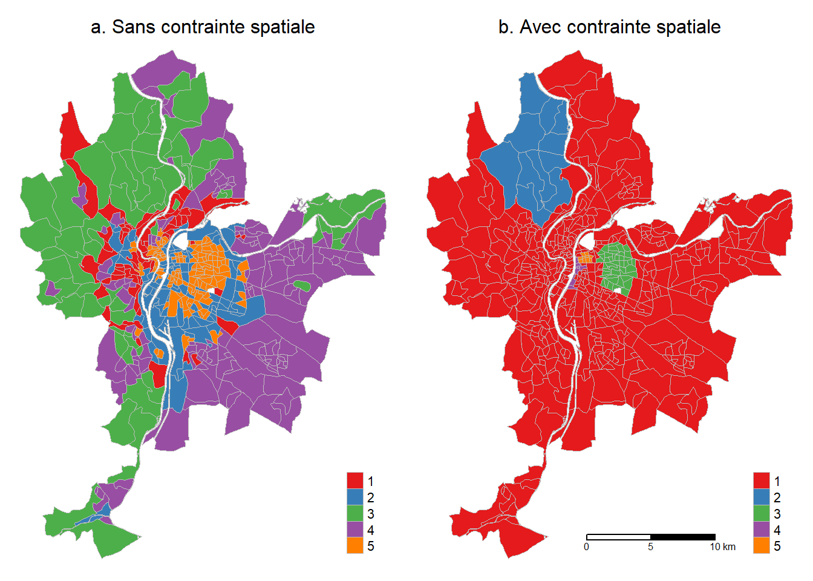
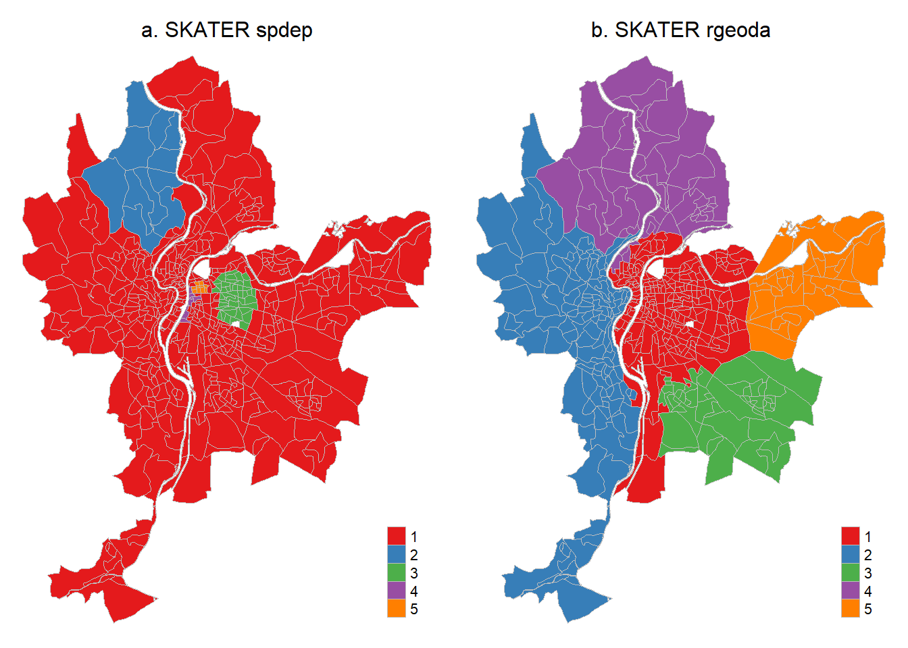

8 Méthodes de classification non supervisée spatiale
Les méthodes de classification visent à regrouper des observations d’un jeu de données en plusieurs classes en fonction de leurs caractéristiques évaluées à partir de plusieurs variables. Appliquées à une couche spatiale (polygones, points, lignes), il s’agit alors de classifier les unités spatiales sur la base de plusieurs de leurs attributs mesurés à partir de variables. Dans le cadre de ce chapitre, nous abordons deux principales familles de méthodes de classification non supervisée : celle avec une contrainte spatiale (algorithmes AZP, SKATER, REDCAP) et celle avec une dimension spatiale (ClustGeo et classification floue c-moyennes spatiale).
Sommairement, les deux dernières méthodes sont des extensions spatiales de la classification ascendante hiérarchique (CAH) et de l’algorithme flou c-moyennes. Par conséquent, la lecture de ce chapitre nécessite de bien maîtriser le fonctionnement de la CAH et des k-moyennes (k-means). Si ce n’est pas le cas, nous vous invitons vivement à lire le chapitre suivant (Apparicio et Gelb 2022).
Bref retour sur les méthodes de classification
Il existe de nombreuses méthodes de classification. Nous distinguons habituellement plusieurs familles de méthodes de classification, celles non supervisées versus supervisées et celles strictes versus floues :
Les méthodes de classification non supervisée « […] relèvent de la statistique exploratoire multidimensionnelle et permettent de regrouper automatiquement les observations sans avoir de connaissance préalable sur la nature des classes présentes dans l’ensemble de données (Lebart, Morineau et Piron 1995). Les méthodes les plus connues dans ce domaine sont l’algorithme de Classification ascendante hiérarchique (CAH) et la méthode des k-moyennes (k-means) » (Gelb et Apparicio 2021, 1). À cela s’ajoutent d’autres méthodes comme les k-médianes (Jain et Dubes 1988) ou encore les k-médoïdes (Kaufman 1990) et la classification mixte combinant k-moyennes et CAH (Lebart, Morineau et Piron 1995). Pour regrouper les observations, ces méthodes (CAH, k-moyennes, k-médianes, k-médoïdes, classification mixte) sont basées sur la distance (proximité) entre les observations tandis que d’autres méthodes sont basées sur la densité des observations (algorithmes DBSCAN, HDBSCAN, STDBSCAN, OPTICS abordés à la section 4.1).
Les méthodes de classification supervisée « […] permettent d’affecter des observations à partir d’un échantillon déjà classifié, souvent appelé classe d’entraînement. Parmi les méthodes supervisées les plus connues, on retrouve les forêts d’arbres décisionnels, les réseaux de neurones artificiels et l’analyse factorielle discriminante » (Gelb et Apparicio 2021, 1). Plus exactement, ces méthodes visent à apprendre des règles basées sur les attributs des observations pour déterminer à quel groupe chaque observation doit être attribuée. Ces règles peuvent ensuite être utilisées pour déterminer la catégorie de nouvelles observations.
Que la classification soit ou non supervisée, « on distingue généralement les méthodes strictes (ou de partition) des méthodes floues. […] Dans une classification stricte, chaque observation appartient à une seule classe : mathématiquement, l’appartenance à une classe donnée est binaire (0 ou 1), tandis que dans une classification floue, chaque observation a une probabilité d’appartenance variant de 0 à 1 pour chacune des classes » (Gelb et Apparicio 2021, 1‑2).
Pourquoi recourir à des méthodes de classification non supervisée spatiale?
Dans un article récent, Gelb et Apparicio (2021) identifient deux principales limites à l’application d’une méthode de classification non supervisée a-spatiale (comme le CAH et le k-means) sur des données spatiales :
- La non-prise en compte de la dimension spatiale constitue une perte d’information : « […] une partie de l’information propre aux données, à savoir leur localisation, n’est pas prise en compte dans le processus de classification. Or, la dimension géographique est souvent très structurante; par conséquent, l’occulter revient à perdre une quantité non négligeable d’information. Il convient toutefois de nuancer quelque peu ce propos. Généralement, la cartographie des méthodes de classification non supervisée a-spatiale (CAH et k-means) révèlent des effets de voisinage, d’autant plus que les variables introduites dans la classification sont fortement autocorrélées positivement » (Gelb et Apparicio 2021, 6).
- Limiter l’effet de mitage : « […] dans un contexte d’autocorrélation spatiale positive, des observations proches spatialement devraient plus vraisemblablement appartenir au même groupe. Avec les méthodes de classification a-spatiale, il est fréquent d’observer des phénomènes de mitage, c’est-à-dire des observations appartenant à un groupe b et isolées au milieu d’un ensemble d’observations appartenant au groupe a. Ce phénomène peut s’expliquer par la présence ici et là d’autocorrélation spatiale locale négative, c’est-à-dire des observations dont les caractéristiques sémantiques diffèrent de leurs voisines. Souvent, la dissimilarité sémantique entre ces observations est négligeable et ne justifie pas cette rupture spatiale » (Gelb et Apparicio 2021, 6).
Liste des packages utilisés dans ce chapitre
- Pour importer et manipuler des fichiers géographiques :
-
sfpour importer et manipuler des données vectorielles. -
spdeppour construire des matrices de pondération spatiale.
-
- Pour construire des cartes et des graphiques :
-
tmapest certainement le meilleur package pour la cartographie. -
ggplot2pour construire des graphiques. -
ggpubrpour combiner des graphiques.
-
- Pour les méthodes de classification avec une contrainte spatiale :
-
rgeodapour les algorithmes AZP, SKATER et REDCAP. -
spdeppour l’algorithme SKATER.
-
- Pour les méthodes de classification avec une dimension spatiale :
-
ClustGeopour la méthode ClustGeo. -
geocmeanspour la classification k-moyennes floue et spatiale.
-
8.1 Méthodes de classification non supervisée avec contrainte spatiale
Nous avons vu que l’objectif d’une méthode non supervisée appliquée à des données spatiales est de regrouper en n classes les unités spatiales d’une couche géographique. Prenons l’exemple de quatre variables environnementales cartographiées à la figure 8.1 pour les IRIS de la ville de Lyon, dont trois considérées comme des nuisances (bruit, dioxyde d’azote et particules fines) et une considérée comme avantageuse (végétation).
Il est possible de regrouper les unités spatiales avec ou sans contrainte spatiale :
Sans contrainte spatiale, nous cherchons à regrouper les IRIS (unités spatiales) avec des valeurs similaires pour les quatre variables retenues (Lden, NO2, PM2,5 et pourcentage de canopée). Cette approche est illustrée à la figure 8.2 (a) avec l’algorithme k-moyennes (k-means en anglais) avec cinq classes.
Avec contrainte spatiale, nous cherchons à regrouper les IRIS (unités spatiales) avec des valeurs similaires pour les quatre variables retenues, tout en nous assurant que les regroupements forment des régions avec une absence de mitage. Cette approche est illustrée à la figure 8.2 (b) avec l’algorithme SKATER (Spatial ’K’luster Analysis by Tree Edge Removal) avec cinq classes. Autrement dit, l’objectif des méthodes de classification non supervisée avec contrainte spatiale est d’agréger n unités spatiales en m régions non discontinues (avec n < m) et cohérentes du point de vue de leurs attributs (Openshaw et Rao 1995, 428).

Intérêt et limites des méthodes de classification avec une contrainte spatiale
Selon Gelb et Apparicio (2021, 7), le résultat d’une méthode de classification avec une contrainte spatiale est « la création de régions très cohérentes spatialement, c’est-à-dire avec une absence de mitage. Autrement dit, avec ces méthodes, il n’est pas possible d’identifier de groupes qui seraient spatialement discontinus, c’est-à-dire composés de plusieurs ensembles régionaux séparés. L’impossibilité d’obtenir du mitage au sein des différentes régions peut masquer la présence de valeurs fortement dissemblables localement, malgré la prise en compte de l’espace. Or, ces observations systématiquement différentes de leurs voisines doivent faire l’objet d’une attention particulière dans les exercices de classification intégrant l’espace, ce que ne permettent pas ces méthodes d’agrégation spatiale.
Les limites de ces méthodes, particulièrement celles relatives au mitage, ont conduit plus récemment à la mise au point de nouvelles méthodes incluant l’espace dans le processus de classification, sans imposer une contrainte de contiguïté. Plus spécifiquement, ces nouvelles méthodes sont des modifications des algorithmes classiques, tels que la CAH ou le FCM, pour intégrer la dimension spatiale en parallèle à la dimension sémantique des données. En d’autres termes, l’espace n’est plus intégré comme une contrainte dans les algorithmes de classification, mais plutôt comme une donnée supplémentaire ».
Les principaux algorithmes de classification non supervisée avec contrainte spatiale (Spatially Constrained Clustering Methods en anglais) sont :
La méthode de zonage automatique (Automatic Zoning Procedure en anglais) (AZP) proposée par Openshaw (1977), puis améliorée par Openshaw et Rao (1995).
L’algorithme SKATER (Spatial ’K’luster Analysis by Tree Edge Removal) (Assunção et al. 2006).
L’algorithme REDCAP (Regionalization with dynamically constrained agglomerative clustering and partitioning) (Guo 2008).
L’algorithme du max-p-regions problem (Duque, Anselin et Rey 2012).
Pour mettre en œuvre ces différents algorithmes, nous utilisons le package rgeoda (Li et Anselin 2023). Notez que l’algorithme SKATER est aussi implémenté dans le package spded (fonction skater).
8.1.1 Algorithmes AZP
L’algorithme AZP (Automatic Zoning Problem) est une approche itérative et heuristique visant à regrouper des polygones adjacents en m régions, tout en maximisant la variance interrégionale (variance interclasse) et en minimisant la variance intrarégionale (variance intraclasse) calculées sur les p variables. Autrement dit, il vise à créer des régions non discontinues les plus homogènes possibles et les plus dissemblables entre elles sur la base des p variables. Pour utiliser l’AZP, il faut spécifier le nombre de régions (m) désiré. Notez qu’il existe trois algorithmes pour l’AZP :
- AZP (Automatic Zoning Procedure), soit la première version par Stan Openshaw (1977).
- AZP-SA (A simulated annealing AZP method) (Openshaw et Rao 1995).
- AZP-TABU (A tabu search heuristic version of AZP) (Openshaw et Rao 1995).
Pour une description détaillée de ces trois algorithmes, vous pouvez consulter Openshaw et Rao (1995) ou encore le lien suivant.
Appliquons ces algorithmes aux 506 IRIS de la ville de Lyon avec les quatre variables environnementales préalablement centrées réduites (bruit, dioxyde d’azote, particules fines et pourcentage de végétation) et une matrice de contiguïté selon le partage d’un nœud. Le package rgeoda comprend trois fonctions pour l’AZP : azp_greedy (AZP), azp_sa (AZP-SA), azp_tabu (AZP-TABU). Pour l’exercice, nous fixons le nombre de régions à 5. Notez que par défaut, les variables seront centrées réduites (moyenne = 0 et écart-type = 1) avec le paramètre scale_method="standardize".
library(rgeoda)
library(sf)
library(tmap)
## Variables
VarsEnv <- c("Lden", "NO2", "PM25", "VegHautPrt")
## Dataframe sans la géométrie et les quatre variables
load("data/chap08/DonneesLyon.Rdata")
Data <- st_drop_geometry(LyonIris[VarsEnv])
## Création d'une matrice de contiguïté avec rgeoda
queen_w <- queen_weights(LyonIris)
## Calcul des trois algorithmes
azp <- rgeoda::azp_greedy(p=5, # Nombre de régions
w=queen_w, # Matrice contiguïté
df=Data, # Tableau de données
scale_method = "standardize") # cote z
azp.sa <- rgeoda::azp_sa(p=5, w=queen_w, df=Data, cooling_rate = 0.85)
azp.tab <- rgeoda::azp_tabu(p=5, w=queen_w, df=Data, tabu_length = 10, conv_tabu = 10)
## Création des trois champs dans la couche de Lyon
LyonIris$Azp <- as.character(azp$Clusters)
LyonIris$Azp_sa <- as.character(azp.sa$Clusters)
LyonIris$Azp_tab <- as.character(azp.tab$Clusters)Cartographions les résultats des trois algorithmes AZP (figure 8.3).
## Cartographie des résultats
Carte.AZP1 <- tm_shape(LyonIris)+tm_borders(col="gray", lwd=.5)+
tm_fill(col="Azp", palette = "Set1", title ="")+
tm_layout(frame=FALSE,
main.title = "a. AZP",
main.title.position = "center",
main.title.size = 1)
Carte.AZP2 <- tm_shape(LyonIris)+tm_borders(col="gray", lwd=.5)+
tm_fill(col="Azp_sa", palette = "Set1", title ="")+
tm_layout(frame=FALSE,
main.title = "b. AZP Simulated Annealing",
main.title.position = "center",
main.title.size = 1)
Carte.AZP3 <- tm_shape(LyonIris)+tm_borders(col="gray", lwd=.5)+
tm_fill(col="Azp_tab", palette = "Set1", title ="")+
tm_layout(frame=FALSE,
main.title = "c. AZP Tabu Search",
main.title.position = "center",
main.title.size = 1)
tmap_arrange(Carte.AZP1, Carte.AZP2, Carte.AZP3, ncol = 2, nrow = 2)
Par la suite, nous comparons les résultats obtenus des trois algorithmes en reportant :
Les variances totale, intrarégionale et interrégionale, et surtout le ratio entre les variances intergroupe et totale. Ce ratio varie de 0 à 1 et exprime la proportion de la variance des variables qui est expliquée par les différentes régions obtenues; plus il est élevé, meilleur est le résultat. Par conséquent, il peut être utilisé pour identifier la solution optimale entre les trois algorithmes.
Le nombre d’observations par région.
Les valeurs moyennes des variables centrées réduites par région.
## Calcul du ratio entre les variances intergroupe et totale
cat("Ratio des variances interrégionale et totale",
"\nAZP : ", round(azp$`The ratio of between to total sum of squares`, 3),
"\nAZP-SA : ", round(azp.sa$`The ratio of between to total sum of squares`, 3),
"\nAZP-TABU : ", round(azp.tab$`The ratio of between to total sum of squares`, 3)
)Ratio des variances interrégionale et totale
AZP : 0.436
AZP-SA : 0.518
AZP-TABU : 0.428À la lecture des valeurs du ratio entre la variance interrégionale et la variance totale ci-dessus, la plus élevée est obtenue pour l’AZP-SA (0,518), suivie de celles de l’AZP (0,436) et de l’AZP-TABU (0,428). Nous retenons alors l’AZP-SA.
## Nombre d'observations par région
table(LyonIris$Azp)
1 2 3 4 5
186 176 104 27 13 table(LyonIris$Azp_sa)
1 2 3 4 5
221 107 87 51 40 table(LyonIris$Azp_tab)
1 2 3 4 5
191 186 91 27 11 ## Valeurs moyennes des variables centrées réduites par région
Data$Azp <- azp$Clusters
Data$Azp_sa <- azp.sa$Clusters
Data$Azp_tab <- azp.tab$Clusters
aggregate(cbind(Lden,NO2,PM25,VegHautPrt) ~ Azp, data = Data, FUN = mean) Azp Lden NO2 PM25 VegHautPrt
1 1 58.05464 35.21961 18.85212 15.45333
2 2 55.42159 26.45169 16.32884 13.98563
3 3 53.23122 23.63965 14.95293 30.42529
4 4 52.26742 22.99701 14.58065 20.39444
5 5 48.71652 18.24301 13.07043 33.07154 Azp_sa Lden NO2 PM25 VegHautPrt
1 1 57.41952 35.02151 18.80132 14.41317
2 2 55.11019 22.52804 15.55562 14.12178
3 3 51.08297 20.48809 14.16951 28.66000
4 4 54.23625 24.47389 14.96836 22.30059
5 5 58.40430 33.55155 17.08480 28.83775 Azp_tab Lden NO2 PM25 VegHautPrt
1 1 55.24285 26.04447 16.19300 14.67712
2 2 58.05464 35.21961 18.85212 15.45333
3 3 53.19298 23.97221 14.99671 31.90967
4 4 52.26742 22.99701 14.58065 20.39444
5 5 48.32861 17.74683 12.84853 31.68364Les résultats finaux de l’AZP-SA sont présentés au tableau 8.1 et à la figure 8.4. L’analyse conjointe du tableau et de la carte permet ainsi d’interpréter chacune des classes. En guise d’exemple, nous pouvons conclure que :
La région 1 comprend 221 IRIS localisés au centre de la ville de Lyon et caractérisés par des niveaux moyens élevés de bruit (57,4), de dioxyde d’azote (35) et de particules fines (18,8) élevés et un faible pourcentage de canopée (14,4 %).
Par contre, la région 2 comprend 107 IRIS localisés à l’extrême ouest de la ville et caractérisés par les plus faibles niveaux de polluants (51,1, 20,5 et 14,2) et une forte moyenne pour la canopée (28,7 %).
| Région | Lden | NO2 | PM25 | Végétation | Nombre d’IRIS |
|---|---|---|---|---|---|
| 1 | 57,4 | 35,0 | 18,8 | 14,4 | 221 |
| 2 | 55,1 | 22,5 | 15,6 | 14,1 | 107 |
| 3 | 51,1 | 20,5 | 14,2 | 28,7 | 87 |
| 4 | 54,2 | 24,5 | 15,0 | 22,3 | 51 |
| 5 | 58,4 | 33,6 | 17,1 | 28,8 | 40 |
Nous avons vu que pour les algorithmes AZP, il faut spécifier le nombre de régions. Nous l’avons fixé arbitrairement à 5. Comme pour n’importe quelle méthode de classification non supervisée, déterminer le nombre de classes optimal est une étape cruciale qui peut s’appuyer sur différentes techniques, dont la méthode du coude basée sur l’inertie expliquée (ici le ratio entre les variances interrégionale et totale), l’indicateur de silhouette et la méthode GAP. Pour une description détaillée de ces méthodes, consultez la section suivante (Apparicio et Gelb 2022). Le code ci-dessous permet de réaliser un graphique avec les valeurs du ratio (inertie expliquée) obtenues avec l’algorithme AZP-TABU calculé pour 2 à 10 régions. À la lecture de la figure 8.5, nous observons deux ruptures (coudes) très nettes à 5 et 8.
library(ggplot2)
nregions <- 2:10
Data <- data.frame(scale(st_drop_geometry(LyonIris)[VarsEnv]))
queen_w <- queen_weights(LyonIris)
inertie <- sapply(nregions, function(k){
# calcul de l'AZP-TABU avec k
resultat <- azp_tabu(p=k, w=queen_w, df=Data, tabu_length = 10, conv_tabu = 10)
# récupération du ratio
ratios <- resultat$`The ratio of between to total sum of squares`
return(ratios)
})
df <- data.frame(k = nregions, ratio = inertie)
ggplot(df) +
geom_line(aes(x = k, y = ratio)) +
geom_point(aes(x = k, y = ratio), color = "red") +
labs(x = "Nombre de régions", y = "Inertie expliquée (%)")8.1.2 Algorithme SKATER
L’algorithme SKATER (Spatial ’K’luster Analysis by Tree Edge Removal) (Assunção et al. 2006) permet aussi de créer des régions sans discontinuité, en recourant à une technique de la théorie des graphes, soit celle de l’arbre couvrant de poids minimal (minimum spanning tree). Succinctement, la classification est obtenue avec les étapes suivantes :
Création d’un graphe de connectivité pour les polygones de la couche géographique. Dans ce graphe, les nœuds sont les centroïdes des polygones et les arêtes représentent les liaisons entre deux entités spatiales voisines.
Pour chaque arête, nous calculons la dissimilarité (appelée coût) des deux polygones voisins en fonction des p variables.
Pour chaque polygone, nous retenons l’arête avec le coût minimal. Autrement dit, pour chaque polygone, nous retenons son polygone voisin qui lui est le plus semblable selon les p variables. Nous obtenons ainsi l’arbre couvrant de poids minimal.
Cet arbre est ensuite élagué en supprimant les arêtes avec les plus forts coûts et en créant ainsi des sous-graphes en m régions sans discontinuité.
Pour une description plus détaillée de l’algorithme, consultez l’article d’Assunção et al. (2006).
Le code ci-dessous permet de centrer et de réduire les quatre variables (fonction scale) et de construire la matrice de voisinage entre les polygones de la couche LyonIris (fonction poly2nb de spdep).
library(spdep)
library(tmap)
## Variables
VarsEnv <- c("Lden", "NO2", "PM25", "VegHautPrt")
## Dataframe sans la géométrie et les quatre variables
load("data/chap08/DonneesLyon.Rdata")
Data <- st_drop_geometry(LyonIris[VarsEnv])
## Données centrées et réduites
LyonIrisZscore <- data.frame(scale(Data))
## Matrice voisinage
Lyon.nb <- poly2nb(LyonIris)Calculons les coûts pour les arêtes reliant les nœuds avec la fonction nbcosts. Nous constatons que le polygone 1 est voisin des polygones 27, 26, 44 et 74 avec des coûts de 1,34, 1,74, 1,15 et 16,3. Par conséquent, parmi ses quatre voisins, le polygone 1 est le plus semblable au polygone 44 (coût minimal).
À partir de ces coûts, nous pouvons trouver l’arbre couvrant de poids minimal (minimum spanning tree), objet dénommé ici Lyon.mst qui comprend trois colonnes :
- La première pour l’identifiant du polygone.
- La seconde pour l’identifiant du polygone voisin.
- La troisième pour la valeur du coût minimal (similarité selon les variables retenues).
## Matrice de pondération spatiale avec les coûts
Lyon.w <- nb2listw(Lyon.nb, lcosts, style="B")
### Trouver l'arbre couvrant de poids minimal
Lyon.mst <- mstree(Lyon.w)
head(Lyon.mst, n=3) [,1] [,2] [,3]
[1,] 499 478 0.5025378
[2,] 478 46 0.4618205
[3,] 46 7 1.3665949Le code ci-dessous permet de visualiser le graphe de connectivité et l’arbre couvrant de poids minimal (figure 8.6).
## Visualisation du graphe de connectivité
coords <- st_coordinates(st_centroid(LyonIris))
plot(st_geometry(LyonIris), border="gray", lwd=.5, col="wheat")
plot(Lyon.nb, coords, add=TRUE, col="red", lwd=1)
## Visualisation de l'arbre couvrant de poids minimal
plot(st_geometry(LyonIris), border="gray", lwd=.5, col="wheat")
plot(Lyon.mst, coords, col="blue", cex.lab=0.7, add=TRUE)
Le code ci-dessous permet de réaliser une classification SKATER avec cinq régions avec le package spdep.
## SKATER avec le package spdep
set.seed(123456789)
skater5.spdep <- spdep::skater(edges = Lyon.mst[,1:2], # premières colonnes de l'arbre
data = data.frame(LyonIrisZscore),
method = "euclidean",
ncuts = 4) # k-1 régions
table(skater5.spdep$groups)
1 2 3 4 5
48 215 89 57 97 Toutefois, il est plus simple d’utiliser la fonction skater de rgeoda qui ne nécessite pas de créer au préalable l’arbre couvrant de poids minimal.
## SKATER avec le package rgeoda
library(rgeoda)
Data <- st_drop_geometry(LyonIris[VarsEnv])
queen_w <- queen_weights(LyonIris)
skater5.rgeoda <- rgeoda::skater(k = 5, # k-1 régions
w = queen_w, # matrice de contiguïté
scale_method = "standardize",
df = Data) # dataframe
table(skater5.rgeoda$Clusters)
1 2 3 4 5
248 125 51 48 34 La figure 8.7 démontre que les résultats obtenus sont légèrement différents avec les deux packages.
LyonIris$skater5spdep <- as.character(skater5.spdep$groups)
LyonIris$skater5rgeoda <- as.character(skater5.rgeoda$Clusters)
Carte.SkaterA <- tm_shape(LyonIris)+tm_borders(col="gray", lwd=.5)+
tm_fill(col="skater5spdep", palette = "Set1", title ="")+
tm_layout(frame=FALSE,
main.title = "a. SKATER spdep",
main.title.position = "center",
main.title.size = 1)
Carte.SkaterB <- tm_shape(LyonIris)+tm_borders(col="gray", lwd=.5)+
tm_fill(col="skater5rgeoda", palette = "Set1", title ="")+
tm_layout(frame=FALSE,
main.title = "b. SKATER rgeoda",
main.title.position = "center",
main.title.size = 1)
tmap_arrange(Carte.SkaterA, Carte.SkaterB)
spdep et rgeodaAlgorithme SKATER avec un seuil minimal pour les classes
Dans une classification non supervisée avec une contrainte spatiale, il est possible de fixer un seuil minimal pour chaque région à partir d’une variable. L’exemple le plus classique est l’obtention de p régions qui doivent au moins avoir un nombre d’habitants fixé par la personne utilisatrice. Pour ce faire, nous utilisons deux paramètres de la fonction spdep::skater, soit crit = 50000 pour fixer le seuil et vec.crit = df$Population pour indiquer le vecteur sur lequel est calculé le critère.
clus10_min <- spdep::skater(edges = ct_mst[,1:2],
# dataframe avec les variables centrées réduites
data = dfs,
# seuil fixé
crit = 50000,
# variable population du dataframe
vec.crit = df$Population,
ncuts = 4)Fonction skater : différences entre les packagesrgeoda et spdep
La fonction skater de rgeoda a deux principaux avantages :
Comme décrit précédemment, l’avantage de la fonction
skaterdergeodaest qu’elle ne nécessite pas de calculer au préalable l’arbre couvrant de poids minimal.scale_method = c(“raw”, “standardize”, “demean”, “mad”, “range_standardize”, “range_adjust”) permet de transformer directement les variables. La méthode par défaut est la cote z (moyenne = 0 et écart-type = 1).
Avec la fonction skater de spdep, vous devez préalablement transformer vos variables et construire l’arbre couvrant de poids minimal. Par contre, elle intègre de nombreux types de distance pour évaluer la dissimilarité entre les unités spatiales avec le paramètre method = c("euclidean", "maximum", "manhattan", "canberra", "binary", "minkowski", "mahalanobis") tandis que le paramètre distance_method = c("euclidean", "manhattan") de rgeoda ne comprend que deux types de distance.
8.1.3 Algorithmes REDCAP
Les différentes versions de l’algorithme REDCAP (Regionalization with dynamically constrained agglomerative clustering and partitioning) proposé par Diansheng Guo (2008) sont aussi basées sur la construction d’un arbre (spanning tree) dont l’élagage est obtenu de cinq différentes façons :
Premier ordre et saut minimal (First-order and Single-linkage) qui fournit un résultat identique à l’algorithme SKATER.
Ordre complet et saut maximal (Full-order and Complete-linkage).
Ordre complet et saut moyen (Full-order and Average-linkage).
Ordre complet et saut minimal (Full-order and Single-linkage).
Ordre complet et critère de Ward (Full-order and Ward-linkage).
Le code ci-dessous permet de calculer les cinq versions de l’algorithmes REDCAP avec cinq régions et de comparer leurs résultats à partir du ratio (entre les variances interrégionale et totale) et du nombre d’observations par région.
library(rgeoda)
library(sf)
## Préparation des données
Data <- st_drop_geometry(LyonIris[VarsEnv])
queen_w <- queen_weights(LyonIris)
## Algorithmes REDCAP
redcap5.A <- redcap(k = 5, w = queen_w, scale_method = "standardize", df = Data,
method = "firstorder-singlelinkage")
redcap5.B <- redcap(k = 5, w = queen_w, scale_method = "standardize", df = Data,
method = "fullorder-completelinkage")
redcap5.C <- redcap(k = 5, w = queen_w, scale_method = "standardize", df = Data,
method = "fullorder-averagelinkage")
redcap5.D <- redcap(k = 5, w = queen_w, scale_method = "standardize", df = Data,
method = "fullorder-singlelinkage")
redcap5.E <- redcap(k = 5, w = queen_w, scale_method = "standardize", df = Data,
method = "fullorder-wardlinkage")
## Comparaison des résultats
Ratios <- data.frame(Methode = c("firstorder-singlelinkage",
"fullorder-completelinkage",
"fullorder-averagelinkage",
"fullorder-singlelinkage",
"fullorder-wardlinkage"),
ratio = c(redcap5.A$`The ratio of between to total sum of squares`,
redcap5.B$`The ratio of between to total sum of squares`,
redcap5.C$`The ratio of between to total sum of squares`,
redcap5.D$`The ratio of between to total sum of squares`,
redcap5.E$`The ratio of between to total sum of squares`)
)
Nobs <- data.frame(rbind(table(redcap5.A$Clusters),
table(redcap5.B$Clusters),
table(redcap5.C$Clusters),
table(redcap5.D$Clusters),
table(redcap5.E$Clusters))
)
names(Nobs) <- c("C1", "C2", "C3", "C4", "C5")
Ratios <- cbind(Ratios, Nobs)
Ratios Methode ratio C1 C2 C3 C4 C5
1 firstorder-singlelinkage 0.4081577 248 125 51 48 34
2 fullorder-completelinkage 0.4728026 173 156 115 47 15
3 fullorder-averagelinkage 0.4993184 148 141 106 63 48
4 fullorder-singlelinkage 0.3976055 227 102 73 53 51
5 fullorder-wardlinkage 0.5185455 166 134 120 51 35À la lecture des valeurs du ratio ci-dessous, la meilleure classification serait celle obtenue avec un ordre complet et le critère de Ward. Cartographions les résultats des quatre versions de l’algorithme RECAP avec un ordre complet (figure 8.8).
## Ajout des champs dans la couche
LyonIris$RC5.FOcompletelinkage <- as.character(redcap5.B$Clusters)
LyonIris$RC5.FOaveragelinkage <- as.character(redcap5.C$Clusters)
LyonIris$RC5.FOsinglelinkage <- as.character(redcap5.D$Clusters)
LyonIris$RC5.FOwardlinkage <- as.character(redcap5.E$Clusters)
## Cartographie des résultats
Carte.RCb <- tm_shape(LyonIris)+tm_borders(col="gray", lwd=.5)+
tm_fill(col="RC5.FOcompletelinkage", palette = "Set1", title ="")+
tm_layout(frame=FALSE,
main.title = "a. Saut maximal",
main.title.position = "center",
main.title.size = 1)
Carte.RCc <- tm_shape(LyonIris)+tm_borders(col="gray", lwd=.5)+
tm_fill(col="RC5.FOaveragelinkage", palette = "Set1", title ="")+
tm_layout(frame=FALSE,
main.title = "b. Saut moyen",
main.title.position = "center",
main.title.size = 1)
Carte.RCd <- tm_shape(LyonIris)+tm_borders(col="gray", lwd=.5)+
tm_fill(col="RC5.FOsinglelinkage", palette = "Set1", title ="")+
tm_layout(frame=FALSE,
main.title = "c. Saut minimal",
main.title.position = "center",
main.title.size = 1)
Carte.RCe <- tm_shape(LyonIris)+tm_borders(col="gray", lwd=.5)+
tm_fill(col="RC5.FOwardlinkage", palette = "Set1", title ="")+
tm_layout(frame=FALSE,
main.title = "d. Critère de Ward",
main.title.position = "center",
main.title.size = 1)
tmap_arrange(Carte.RCb, Carte.RCc, Carte.RCd, Carte.RCe, ncol = 2, nrow = 2)
8.1.4 Algorithme du max-p-regions problem
Cet algorithme, proposé par Duque et al. (2012), n’est pas décrit ici. Notez qu’il peut être calculé avec trois fonctions du package rgeoda, soit maxp_greedy, maxp_sa et maxp_tabu.
8.2 Méthodes de classification non supervisée avec une dimension spatiale
Nous avons vu que les méthodes de classification avec une contrainte spatiale visent à obtenir des régions non discontinues, c’est-à-dire sans mitage spatial. L’objectif des méthodes de classification non supervisée avec une dimension spatiale est quelque peu différent : classifier les observations en tenant compte de l’espace (proximité, voisinage entre les unités spatiales) afin de limiter les effets de mitage, sans toutefois l’interdire.
Dans le cadre de cette section, nous décrivons deux de ces méthodes qui intègrent la dimension spatiale de manière différente :
La méthode ClustGeo, qui est une extension de la classification ascendante hiérarchique, est une méthode de classification non supervisée, spatiale et stricte. Cette méthode repose sur deux matrices de dissimilarité : une matrice des distances sémantiques (attributaires) calculée sur les valeurs de plusieurs variables caractérisant les observations et une matrice de distances (euclidienne le plus souvent) entre les entités géographiques. Nous cherchons ainsi à regrouper les observations qui se ressemblent à la fois selon leurs attributs et selon leur proximité spatiale.
La méthode k-moyennes spatiale et floue (Spatial fuzzy c-means), qui est une extension de la méthode k-moyennes, est une méthode de classification non supervisée, spatiale et floue. Cette méthode repose sur deux matrices de dissimilarité : une matrice sémantique calculée sur les valeurs de plusieurs variables caractérisant les entités géographiques et une matrice sémantique spatialement décalée. Nous cherchons ainsi à regrouper les observations qui se ressemblent à la fois selon leurs caractéristiques et celles de leurs unités spatiales adjacentes ou proches.
Autrement dit, dans la méthode ClustGeo, l’espace est introduit sous la forme d’une matrice de distances entre les entités spatiales (agencement spatial) tandis que dans la méthode du Spatial fuzzy c-means, il est introduit sous la forme d’une matrice de données sémantiques spatialement décalées (information sémantique dans l’environnement immédiat).
8.2.1 Classification ascendante hiérarchique spatiale (ClustGeo)
8.2.1.1 Description de la méthode ClustGeo
La méthode ClustGeo, proposée par Marie Chavent et ses collègues (2018), est une extension de la classification ascendante hiérarchique (CAH) qui intègre la dimension spatiale des entités géographiques. Cette méthode repose sur une idée brillante, soit de classer (regrouper) les observations (unités spatiales) en combinant deux matrices de dissimilarité :
Une matrice sémantique calculée sur p variables caractérisant les unités spatiales (\(D_0\)).
-
Une matrice spatiale calculée à partir des distances spatiales (habituellement euclidienne) entre les unités spatiales (\(D_1\)). Ces deux matrices sont ensuite fusionnées en une seule matrice finale représentant la combinaison de la distance spatiale et de la dissimilarité sémantique (attributaire) entre les observations. Notez qu’un paramètre \(\alpha\), variant de 0 à 1, permet de définir le poids de la matrice spatiale comparativement à celui de la sémantique :
Avec \(\alpha=0\), le poids accordé à la matrice spatiale est nul. Nous obtenons ainsi une CAH classique puisque seules les différences attributaires sont conservées.
Avec \(\alpha=1\), le poids accordé à la matrice spatiale est maximal; la classification est alors purement spatiale et ignore les différences attributaires.
Par conséquent, « […] l’enjeu principal est de fixer la valeur du paramètre 𝛼, considérant qu’une augmentation de 𝛼 revient à améliorer l’inertie expliquée de la matrice spatiale, au détriment d’une perte de l’inertie expliquée sur le plan sémantique » (Gelb et Apparicio 2021, 16).
8.2.1.2 Calcul de la CAH classique
Retour sur la classification ascendante hiérarchique (CAH)
Pour une description détaillée de la CAH, consultez la section suivante (Apparicio et Gelb 2022).
Le code ci-dessous permet de construire l’arbre de classification selon le critère de Ward à partir de la matrice sémantique (figure 8.9).
## Variables pour la CAH
VarsEnv <- c("Lden", "NO2", "PM25", "VegHautPrt")
## Dataframe sans la géométrie et les quatre variables
load("data/chap08/DonneesLyon.Rdata")
Data <- st_drop_geometry(LyonIris[VarsEnv])
## Centrage (moyenne = 0) et réduction des données (variance = 1)
DataZscore <- data.frame(scale(Data))
## Matrice sémantique : dissimilarité des observations selon les variables
Matrice.Semantique <- dist(DataZscore, method = "euclidean")
# Calcul du dendrogramme avec le critère WARD
Arbre <- hclust(Matrice.Semantique, method = "ward.D")
plot(Arbre, hang = -1, label = FALSE,
main = "Dendrogramme \n(arbre de classification selon le critère de Ward)",
sub = "", ylab = "Hauteur", xlab = ""
)À la lecture de la figure 8.10, nous ne détectons pas de seuils marqués dans l’inertie expliquée en fonction du nombre de groupes. Par conséquent, nous fixons arbitrairement le nombre de groupes à 5.
library(ggplot2)
# Fonction pour l'inertie expliquée par les classes
prop_inert_cutree <- function(K,tree,n){
P <- cutree(tree,k=K)
W <- sum(tree$height[1:(n-K)])
Tot <- sum(tree$height)
return(1-W/Tot)
}
# Inertie expliquée par des CAH de 2 à 10 classes
df.inertie <- data.frame(NGroupes = 2:10,
Inertie = sapply(2:10,
prop_inert_cutree,
tree=Arbre,
n=nrow(DataZscore)))
ggplot(df.inertie)+
geom_line(aes(x=NGroupes,y=Inertie))+
geom_point(aes(x=NGroupes,y=Inertie), color = "red") +
labs(y = "Inertie expliquée", x = "Nombre de groupes")
Nous pouvons visualiser l’arbre avec une coupure à cinq classes.
plot(Arbre, labels = FALSE,
main = "Partition en 2, 5 ou 9 classes",
xlab = "", ylab = "", sub = "", axes = FALSE, hang = -1)
rect.hclust(Arbre, 5, border = "red")## Coupure de l'arbre à cinq classes
LyonIris$CAH5 <- as.character(cutree(Arbre, k=5))
## Nombre d'observations par classe
table(LyonIris$CAH5)
1 2 3 4 5
62 120 88 81 155 ## Valeurs moyennes des classes
aggregate(cbind(Lden,NO2,PM25,VegHautPrt) ~ CAH5, data = st_drop_geometry(LyonIris), FUN = mean) CAH5 Lden NO2 PM25 VegHautPrt
1 1 49.52246 19.11011 13.84968 34.64694
2 2 54.57170 22.29326 15.17248 12.34458
3 3 62.53950 37.18071 18.25763 18.25330
4 4 55.21535 25.85652 15.83278 26.67333
5 5 55.08405 34.17193 18.90686 13.44716Les résultats de la CAH sont cartographiés à la figure 8.11 tandis que le nombre d’observations et les valeurs moyennes des classes sont reportés au tableau @tbl-dataCAHtab.
library(tmap)
## Cartographie des résultats
Carte.CAH5 <- tm_shape(LyonIris)+tm_borders(col="gray", lwd=.5)+
tm_fill(col="CAH5", palette = "Set1", title ="")+
tm_layout(frame=FALSE,
main.title = "CAH (critère de Ward)",
main.title.position = "center",
main.title.size = 1)
Carte.CAH5
| Classe | Lden | NO2 | PM25 | Végétation | Nombre d’IRIS |
|---|---|---|---|---|---|
| 1 | 49,5 | 19,1 | 13,8 | 34,6 | 62 |
| 2 | 54,6 | 22,3 | 15,2 | 12,3 | 120 |
| 3 | 62,5 | 37,2 | 18,3 | 18,3 | 88 |
| 4 | 55,2 | 25,9 | 15,8 | 26,7 | 81 |
| 5 | 55,1 | 34,2 | 18,9 | 13,4 | 155 |
8.2.1.3 Calcul de la méthode ClustGeo
Calcul des deux matrices (sémantique et spatiale)
Dans un premier temps, nous créons les matrices sémantique (\(D_0\)) et spatiale (\(D_1\)). Notez ici que les distances spatiales utilisées correspondent aux distances euclidiennes entre les centroïdes des IRIS.
library(sf)
library(ClustGeo)
## Variables
VarsEnv <- c("Lden", "NO2", "PM25", "VegHautPrt")
## Dataframe sans la géométrie et les quatre variables
load("data/chap08/DonneesLyon.Rdata")
Data <- st_drop_geometry(LyonIris[VarsEnv])
## Centrage (moyenne = 0) et réduction des données (variance = 1)
DataZscore <- data.frame(scale(Data))
## Matrice sémantique : dissimilarité des observations selon les variables
Matrice.Semantique <- dist(DataZscore, method = "euclidean")
## Matrice spatiale entre les unités spatiales
xy <- st_coordinates(st_centroid(LyonIris))
Matrice.Spatiale <- dist(xy, method = "euclidean")Optimisation de la valeur de \(\alpha\)
Pour la méthode ClustGeo (avec k = 5), nous évaluons l’impact du paramètre α pour des valeurs de 0 à 1, avec un saut de 0,05. Pour ce faire, nous utilisons la fonction choicealpha du package ClustGeo. À la lecture de la figure 8.12, nous constatons que :
Plus la valeur de \(\alpha\) augmente, plus l’inertie expliquée par la matrice sémantique diminue (trait noir) et inversement, plus l’inertie expliquée par la matrice spatiale est forte.
Avec \(\alpha = \text{0,30}\), l’inertie expliquée par la matrice spatiale est de 50 % pour une perte d’inertie expliquée par la matrice sémantique de seulement 7 %. Avec \(\alpha = \text{0,35}\), nous constatons une chute importante de l’inertie sémantique expliquée. Par conséquent, nous retenons la valeur de 0,30 pour la méthode ClustGeo. Ce choix donne un excellent compromis entre la préservation de l’inertie expliquée des données attributaires et la cohérence spatiale de la classification finale.
alphas <- seq(0, 1, 0.05)
result <- choicealpha(D0 = Matrice.Semantique, # matrice sémantique
D1 = Matrice.Spatiale, # matrice spatiale
range.alpha = alphas, # valeurs de alpha
K = 5, # nombre de classes
wt = NULL, scale = TRUE, graph = FALSE)
# Graphique avec Alpha
df.alpha <- data.frame(result$Q)
df.alpha$alpha <- alphas
ggplot(df.alpha)+
geom_line(aes(x=alphas,y= Q0), color = "black")+
geom_point(aes(x=alphas,y= Q0), color = "black", size=3) +
geom_line(aes(x=alphas,y= Q1), color = "red")+
geom_point(aes(x=alphas,y= Q1), color = "red", size=3) +
labs(y = "Pseudo-inertie",
x = "Paramètre alpha",
subtitle = "Matrice sémantique (noir) et matrice spatiale (rouge)")
Réalisation de la méthode ClustGeo
## Dendrogramme avec ClustGeo
Arbre.ClustGeo <- hclustgeo(D0 = Matrice.Semantique, D1 = Matrice.Spatiale, alpha = 0.30)
## Coupure de l'arbre à cinq classes
LyonIris$ClustGeo5 <- as.character(cutree(Arbre.ClustGeo, k=5))
## Nombre d'observations par classe
table(LyonIris$ClustGeo5)
1 2 3 4 5
101 73 102 145 85 ## Valeurs moyennes des classes
aggregate(cbind(Lden,NO2,PM25,VegHautPrt) ~ ClustGeo5,
data = st_drop_geometry(LyonIris), FUN = mean) ClustGeo5 Lden NO2 PM25 VegHautPrt
1 1 51.99446 22.63948 14.69971 32.70396
2 2 55.46789 20.84670 15.00392 14.07849
3 3 61.41468 36.20785 18.23707 18.77059
4 4 54.98927 34.16558 18.93142 12.84883
5 5 54.05419 24.32165 15.45733 16.14224## Cartographie des résultats
Carte.ClusteGeo <- tm_shape(LyonIris)+tm_borders(col="gray", lwd=.5)+
tm_fill(col="ClustGeo5", palette = "Set1", title ="")+
tm_layout(frame=FALSE,
main.title = "ClustGeo avec alpha = 0,30",
main.title.position = "center",
main.title.size = 1)
Carte.ClusteGeo| Classe | Lden | NO2 | PM25 | Végétation | Nombre d’IRIS |
|---|---|---|---|---|---|
| 1 | 52,0 | 22,6 | 14,7 | 32,7 | 101 |
| 2 | 55,5 | 20,8 | 15,0 | 14,1 | 73 |
| 3 | 61,4 | 36,2 | 18,2 | 18,8 | 102 |
| 4 | 55,0 | 34,2 | 18,9 | 12,8 | 145 |
| 5 | 54,1 | 24,3 | 15,5 | 16,1 | 85 |
La comparaison des typologies obtenues avec la CAH et la ClusteGeo démontre clairement que l’introduction d’une matrice spatiale dans la classification ClustGeo génère des classes qui sont moins discontinues spatialement (figure 8.14).
tmap_arrange(Carte.CAH5, Carte.ClusteGeo, nrow = 1, ncol = 2)8.2.2 Spatial fuzzy c-means
La méthode SFCM (Spatial fuzzy c-means), proposée par Weiling Cai et ses collègues (2007), est une extension de FCM, soit une version floue de l’algorithme des k-moyennes. Le principe de base est le suivant :
« Comparativement au FCM classique, le SFCM introduit dans son calcul, en plus du jeu de données original (\(D_0\)), une version spatialement décalée (\(D_s\)) de ce dernier (Cai, Chen et Zhang 2007). En analyse d’image, cela revient à calculer \(D_s\) en appliquant un filtre moyen ou médian à \(D_0\) (la médiane étant moins sensible aux valeurs extrêmes locales). Ce processus peut facilement s’appliquer à des entités géographiques vectorielles, en créant une matrice de pondération spatiale \(W_{kl}\) (l étant les voisins de k et la diagonale de cette matrice valant 0) (Getis 2009) et en utilisant les poids de cette matrice dans le calcul d’une moyenne ou d’une médiane pondérée locale » (Gelb et Apparicio 2021, 8).
Comme pour la méthode ClustGeo, il est possible de fixer une pondération à la dimension spatiale (\(D_s\)) avec un paramètre \(\alpha\), qui varie de 0 à \(\infty\). Une valeur de 0 signale qu’aucun poids n’est accordé à la dimension spatiale, ce qui revient à calculer un FCM classique. Si \(\alpha = \text{2}\), alors la version spatialement décalée aura deux fois plus de poids dans la classification que le jeu de données original.
Retour sur une variable spatialement décalée et la classification k-moyennes
La notion de variable spatialement décalée a été abordée au chapitre 2 (figure 2.29). Pour une description détaillée de la classification k-moyennes, consultez la section suivante (Apparicio et Gelb 2022).
8.2.2.1 Calcul de la classification c-moyennes floue classique (fuzzy c-means)
À des fins de comparaison avec la CAH, nous proposons de calculer une classification c-moyennes floue classique (fuzzy c-means) avec cinq classes (k = 5). Puis, pour déterminer la valeur optimale de m (soit le degré de logique floue), nous calculons l’inertie expliquée et l’indice de silhouette pour des valeurs de m variant de 1,1 à 3 (avec un incrément de 0,1). Les résultats de ces deux indicateurs, présentés à la figure 8.15, signalent que :
- Plus le paramètre m augmente, plus l’inertie expliquée diminue (figure 8.15, a).
- La valeur de l’indice de silhouette est maximale avec m = 1,8 (figure 8.15, b).
library(geocmeans)
library(ggpubr)
## Variables pour la CAH
VarsEnv <- c("Lden", "NO2", "PM25", "VegHautPrt")
## Dataframe sans la géométrie et les quatre variables
load("data/chap08/DonneesLyon.Rdata")
Data <- st_drop_geometry(LyonIris[VarsEnv])
## Centrage (moyenne = 0) et réduction des données (variance = 1)
DataZscore <- data.frame(scale(Data))
## Dataframe pour les différents paramètres avec k = 5 et degré de flou
FCM_selection <- select_parameters(algo = "FCM",
data = DataZscore,
k = 5, # nous pourrions ici tester avec k=2:10
m = seq(1.1,3,0.1),
classidx = TRUE, spconsist = FALSE,
tol = 0.001, seed = 456,
verbose = FALSE)[1] "number of combinaisons to estimate : 20"# Graphique avec l'inertie expliquée
G1 <- ggplot(FCM_selection) +
geom_line(aes(x = m, y = Explained.inertia)) +
geom_point(aes(x = m, y = Explained.inertia), color = "red")+
labs(title ="a. Variation des données expliquées",
y = "Inertie expliquée", x = "Paramètre m")
# Graphique avec l'indice de silhouette
G2 <- ggplot(FCM_selection) +
geom_line(aes(x = m, y = Silhouette.index)) +
geom_point(aes(x = m, y = Silhouette.index), color = "red")+
labs(title ="b. Consistance des groupes",
y = "Critère de silhouette floue", x = "Paramètre m")
# Combinaison des deux graphiques dans la figure
ggarrange(G1, G2)Réalisons la classification c-moyennes floue et cartographions les probabilités d’appartenance à chacune des classes (figure 8.16), puis l’appartenance à une classe (figure 8.17).
## Classification du c-moyennes
FCM <- CMeans(DataZscore, k = 5, m = 1.8, tol = 0.0001, verbose = FALSE, seed = 456)
## Calcul des indicateurs de qualité
calcqualityIndexes(DataZscore, FCM$Belongings, 1.5)$Silhouette.index
[1] 0.5502472
$Partition.entropy
[1] 0.9663788
$Partition.coeff
[1] 0.5143427
$XieBeni.index
[1] 1.269992
$FukuyamaSugeno.index
[1] 158.1419
$Explained.inertia
[1] 0.3757482## Cartographie des probabilités d'appartenance à chaque classe
Cartes.FCM <- mapClusters(LyonIris,FCM$Belongings)
names(Cartes.FCM)[1] "ProbaMaps" "ClusterPlot"tmap_arrange(Cartes.FCM$ProbaMaps, ncol = 2)Cartes.FCM$ClusterPlot
8.2.2.2 Calcul de la classification c-moyennes floue et spatiale (spatial fuzzy c-means)
Dans l’exemple ci-dessous, nous calculons une classification SFCM (spatial fuzzy c-means). Nous avons déterminé avec l’analyse du simple FCM que la valeur de 1,8 pour m semblait satisfaisante avec cinq groupes (k = 5). Nous devons maintenant déterminer la valeur de alpha, soit le poids accordé aux variables spatialement décalées comparativement aux données originales.
Pour cela, nous calculons toutes les valeurs possibles d’alpha entre 0 et 2 avec un intervalle de 0,05. Nous comparons ensuite les valeurs des indices de silhouette (qualité sémantique de la classification) et d’incohérence spatiale des différentes solutions.
library(spdep)
library(ggplot2)
# Création d'une matrice de contiguïté standardisée
Neighbours <- poly2nb(LyonIris, queen = TRUE)
WMat <- nb2listw(Neighbours, style="W", zero.policy = TRUE)
SFCM_selection <- select_parameters(algo = "SFCM",
data = DataZscore,
k = 5,
m = 1.8,
nblistw = WMat,
alpha = seq(0,2,0.05),
classidx = TRUE,
tol = 0.001, seed = 456,
spconsist = TRUE,
verbose = FALSE)[1] "number of combinaisons to estimate : 41"graph1 <- ggplot(SFCM_selection) +
geom_line(aes(x = alpha, y = Silhouette.index), color = 'black') +
geom_point(aes(x = alpha, y = Silhouette.index), color = 'red')+
labs(x = "Alpha", y = "Indice de silhouette", )
graph2 <- ggplot(SFCM_selection) +
geom_line(aes(x = alpha, y = spConsistency), color = 'black') +
geom_point(aes(x = alpha, y = spConsistency), color = 'red')+
labs(x = "Alpha", y = "Indice d'incohérence spatiale")
ggarrange(graph1, graph2, ncol = 2, nrow = 1)La figure 8.18 démontre que l’augmentation d’alpha a pour effet de réduire la qualité sémantique de la classification (indice de silhouette), mais aussi de limiter l’inconsistance spatiale des résultats produits. Nous constatons aussi que l’augmentation d’alpha a un effet quasiment linéaire sur la dégradation de l’indice de silhouette et un effet curvilinéaire sur l’inconsistance spatiale. Cette dernière est donc plus impactée par les premières augmentations d’alpha. Nous proposons ici de retenir une solution avec \(\alpha\) = 0,55, car elle correspond à une baisse relativement faible de l’indice de silhouette (0,55 versus 0,50) pour une augmentation importante de la cohérence spatiale des résultats (0,39 versus 0,22).
# Calcul du SFCM
SFCM <- SFCMeans(DataZscore, WMat,
k = 5,
m = 1.8,
alpha = 0.55,
tol = 0.0001, standardize = FALSE,
verbose = FALSE, seed = 456)Résultats des indicateurs de qualité du SFCM
calcqualityIndexes(DataZscore, SFCM$Belongings, 1.5)$Silhouette.index
[1] 0.4995905
$Partition.entropy
[1] 1.039552
$Partition.coeff
[1] 0.4726401
$XieBeni.index
[1] 2.011733
$FukuyamaSugeno.index
[1] 380.0203
$Explained.inertia
[1] 0.3371823Cartographie des probabilités d’appartenance à chaque classe
La cartographie des probabilité d’appartenance pour chacune des cinq classes est présentée aux figures 8.19, 8.20, 8.21, 8.22 et 8.22.
Cartes.SFCM <- mapClusters(LyonIris, SFCM$Belongings, undecided = 0.45)
Cartes.SFCM$ProbaMaps[[1]]Cartes.SFCM$ProbaMaps[[2]]Cartes.SFCM$ProbaMaps[[3]]Cartes.SFCM$ProbaMaps[[4]]Cartes.SFCM$ProbaMaps[[5]]Cartographie des probabilités d’appartenance à chaque classe du SFCM (figure 8.24)
Cartes.SFCM$ClusterPlotIl est intéressant de noter que les groupes construits par les deux algorithmes (ClustGeo et SFCM) produisent des solutions assez différentes. Nous retrouvons dans les deux classifications un groupe caractérisant les quartiers centraux, puis une distinction assez nette entre les secteurs est et ouest de l’agglomération. Cependant, ClustGeo regroupe les Iris du sud dans un groupe spécifique alors que SFCM a identifié deux groupes plus atypiques spatialement. Le groupe 5 correspond aux Iris situés le long du boulevard périphérique encerclant Lyon.
Le groupe 5 correspond donc à un ensemble d’Iris avec les plus hauts niveaux de concentration de pollutions atmosphérique et sonore (figure ci-dessous). Il est similaire en cela au groupe 1, qui est cependant marqué par des niveaux de bruit un peu moins élevés.
spiderPlots(Data,SFCM$Belongings,
chartcolors = c("darkorange3",
"grey4",
"darkgreen",
"royalblue",
"blueviolet"))
De multiples saveurs du SFCM
Plusieurs variantes du SFCM sont proposées par le package geocmeans qui offrent une grande flexibilité :
- La version généralisée du SFCM (appelée SFGCM) avec l’ajout d’un paramètre supplémentaire (beta) qui accélère la convergence du SFCM en limitant la probabilité attribuée au groupe le moins probable de chaque observation.
- Les versions robustes du SFCM et SFGCM, qui normalisent les distances calculées entre les observations pour réaliser des classifications non sphériques.
- L’ajout d’un groupe de résidus, permettant d’attribuer les observations très incertaines à un groupe « poubelle », ce qui évite d’influencer la cohérence des « vrais groupes » avec des observations très atypiques.
8.3 Quiz de révision du chapitre
Quelles sont les méthodes de classification non supervisée avec une contrainte spatiale?
Relisez l’introduction du chapitre 8.
Quelles sont les méthodes de classification non supervisée avec une dimensions spatiale?
Relisez l’introduction de la section 8.
La classification ascendante hiérarchique et la classification le k-moyennes sont des méthodes de classification non supervisée qui ne prennent pas en compte l’espace :
Relisez au besoin la section 8.
Une méthode de classification avec contrainte spatiale produit des régions non discontinues (sans mitage spatial) :
Relisez au besoin la section 8.1.
Le paramètre alpha de la méthode ClustGeo permet de définir le poids accordé à la matrice spatiale. Son intervalle de variation est de :
Relisez le deuxième encadré à la section 8.2.1.1.
Le paramètre alpha de la classification c-moyennes spatiale floue permet de définir le poids accordé à la matrice spatialement décalée. Son intervalle de variation est de :
Relisez le deuxième encadré à la section 8.2.1.1.
8.4 Exercices de révision
Exercice 1. Réalisation de classification avec contrainte spatiale avec des variables socioéconomiques
library(rgeoda)
library(sf)
library(tmap)
## Préparation des données
load("data/chap08/DonneesLyon.Rdata")
VarSocioEco <- c("Pct0_14", "Pct_65", "Pct_Img", "Pct_brevet", "NivVieMed")
Data2 <- st_drop_geometry(LyonIris[VarSocioEco])
queen_w <- queen_weights(LyonIris)
## Classification avec k = 4
azp5_sa <- à compléter
azp5_tab <- à compléter
skater5 <- rgeoda::skater(à compléter)
redcap5 <- à compléter
## Cartographie des résultats
LyonIris$SE.azp4_sa <- à compléter
LyonIris$SE.azp4_tab <- à compléter
LyonIris$SE.skater4 <- à compléter
LyonIris$SE.recap4 <- à compléter
Carte1 <- tm_shape(LyonIris)+tm_borders(col="gray", lwd=.5)+
tm_fill(col="SE.azp4_sa", palette = "Set1", title ="")+
tm_layout(frame=FALSE, main.title = "a. AZP-SA",
main.title.position = "center", main.title.size = 1)
Carte2 <- tm_shape(LyonIris)+tm_borders(col="gray", lwd=.5)+
tm_fill(col="SE.azp4_tab", palette = "Set1", title ="")+
tm_layout(frame=FALSE, main.title = "b. AZP-TABU",
main.title.position = "center", main.title.size = 1)
Carte3 <- tm_shape(LyonIris)+tm_borders(col="gray", lwd=.5)+
tm_fill(col="SE.skater4", palette = "Set1", title ="")+
tm_layout(frame=FALSE, main.title = "c. Skater",
main.title.position = "center", main.title.size = 1)
Carte4 <- tm_shape(LyonIris)+tm_borders(col="gray", lwd=.5)+
tm_fill(col="SE.recap4", palette = "Set1", title ="")+
tm_layout(frame=FALSE, main.title = "d. RECAP",
main.title.position = "center", main.title.size = 1)
tmap_arrange(à compléter)Correction à la section 12.8.1.